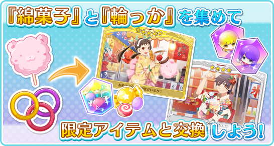
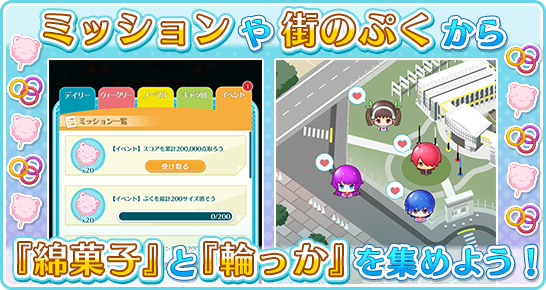
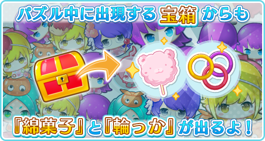

The event will last from September 3 (Monday) After Maintenance ~ September 17 (Mon) 23: 59 The
exchange deadline will be until September 24 (Monday) 23:59. The Treasure Box will appear after clearing
Hitagi Club 02-001. Only users that have completed Hitagi Club 01-003 can participate.
 Collect "Cotton Candy" and "Rings" from various places ingame and exchange them for event-only scenes
and items at the exchange place!
 Tap your PucPucs in town to get "Rings" for the event. "Hanekawa Tsubasa Summer Favorites" and "Oshino
Shinobu Summer Favorites" give more rings when you tap them.
 Clear event missions that are added every day to collect more "cotton candy"! You can also get "cotton
candy" and "rings" from the treasure box that appears during the puzzles. Ranking event held! Join
the ranking and get "gorgeous compensation"! ※ The event rankings are scheduled to be held between
12:00 September 10 (Monday) and September 16 (Sun) 23: 59.
Official Site
 Shrine Competition Festival!
Shrine Competition Festival!